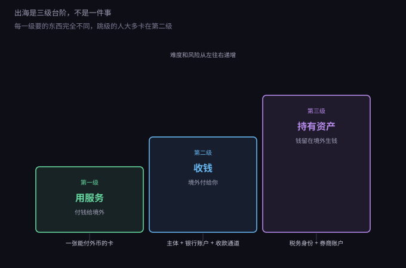
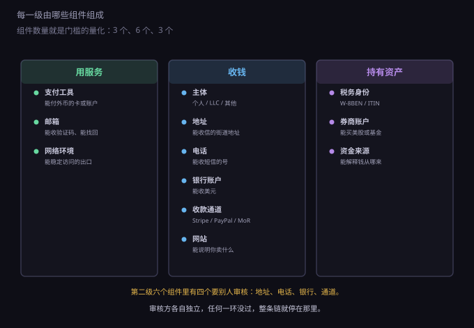
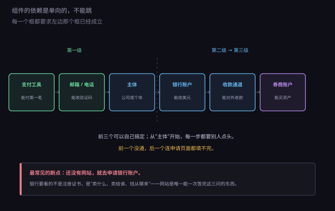

约 0.35 万字 · 3 张图 · 3 个组件、6 个组件、3 个组件
划分依据只有一条：钱往哪个方向走。

第一级，用服务：钱从你这里出去。订 API、买服务器、订阅工具。 单向流出，不需要向谁证明你是谁。
第二级，收钱：钱从外面进来。卖软件、接外包、做订阅。 这一级开始需要"身份"——付款方要确认三件事： 钱该打给谁、你是干什么的、出了纠纷找谁。
第三级，持有资产：钱不回来了，留在境外买美股、ETF、货币基金。 这一级需要的是一个能被税务系统识别的身份， 以及一份能解释"这笔钱从哪来"的来源证明。
三级不是并列的三个选项，是一条链上的三个位置。 下面把每一级拆成组件，就能看清为什么。
把三级摊开，一共十二个组件。这个数字本身就是门槛的量化。

第一级，三个组件，全在自己手里。
这三个组件没有任何一个需要别人批准。有卡、有邮箱、能上网，第一级就通了。
第二级，六个组件，其中四个要审核。
注意最后一条：网站本身不是门槛，但它是门槛的钥匙。 银行和支付公司审核你的时候，问的都是同一组问题—— 你卖什么、卖给谁、钱从哪来。网站是唯一能一次性答完这三问的东西。
第三级，三个组件，全部要审核。
把十二个组件按"谁审、审什么、多久"列一遍，就能看出时间该花在哪。
| 组件 | 审核方 | 审什么 | 通常耗时 |
|---|---|---|---|
| 支付工具 | 发卡方 / 银行 | 身份、地址 | 即时～3 天 |
| 邮箱 | 服务商 | 一个手机号 | 即时 |
| 网络环境 | 无 | — | 即时 |
| 主体 | 州政府 | 名称是否重复、有没有注册代理 | 1～3 天 |
| 地址 | 代理公司 / 虚拟办公室 | 身份证明，美国地址要公证表单 | 1～7 天 |
| 电话 | 运营商 | 实名，或一个当地地址 | 即时～2 周（等卡） |
| 银行账户 | 银行 / 金融科技 | 业务真实性、网站、流水预期 | 1 天～4 周 |
| 收款通道 | 支付公司 | 网站、商品类型、退款政策 | 1 天～2 周 |
| 网站 | 无 | — | 1 天 |
| 税务身份 | 美国税局 | 只备案，不审批 | 即时 |
| 券商账户 | 券商 | 地址证明、资金来源 | 1～4 周 |
| 资金来源 | 券商 / 银行 | 流水、合同、完税记录 | 随查随要 |
这张表能推出两个结论。
第一，真正会卡住的只有四个：地址、电话、银行、收款通道。 其余八个要么即时通过，要么根本不用审。所以时间预算应该压在这四个上， 而不是平均分配。
第二，耗时最长的是银行，1 天到 4 周。 这不是它效率低，是它在做尽职调查。而调查的依据主要是你自己提供的东西—— 网站写得清不清楚、业务描述前后一致不一致、预期流水合不合理。 换句话说，银行的审核时间，很大程度上由你的准备质量决定。
十二个组件不是随便凑的，它们有一条固定的先后顺序。

这条链之所以单向，是因为每个组件的申请表单里，都要填前一个组件的信息：
这就是"不能跳级"的技术原因，不是心态问题： 表单填不下去。你可以在一天内注册一家美国公司， 但没有电话、没有地址、没有网站，接下来的每一步都卡在第一个必填项上。
链条上还有一个容易被排错的顺序：网站要在银行之前。 大多数人把网站当成"最后再做"的东西，实际上它是银行审核时最常被要求提供的材料。 一个能打开的、写清业务和定价的页面，比任何解释都有效。
组件清单容易让人以为"要全齐才能开始"。实际不是—— 每一级都有一个能跑起来的最小组合，先跑通再加。
第一级最小配置（一天，50 美元以内）：
验证方式：付一笔最小的境外账单（比如 5 美元的 API 充值）。 扣款成功，第一级就通了。扣款失败，问题通常出在卡的卡段或账单地址， 换一张卡就能定位。
第二级最小配置（一个月，300~600 美元）：
这一级的关键不是把钱花够，是让六个组件的信息互相对得上： 公司地址、银行开户地址、网站上的联系地址，三处要一致； 电话能打通、邮箱能回信。任何一处对不上，审核就会退回。
第三级最小配置（等有稳定收入之后）：
还有一个自然的问题：第二级为什么一定要"主体"？个人不能直接收钱吗？
能，但受限。个人身份可以开 PayPal 个人号、Wise 个人账户， 收小额、低频的钱没问题。一旦超过某个量，就会碰到三条限制：
所以主体不是"看起来正规"的装饰，它是打开通道的钥匙。 这也解释了为什么第二级的六个组件里，主体排在银行和通道之前—— 没有它，后面两个的门都进不去。
顺带说清组件的替代关系：同一个格子可以有不同填法， 但填法会影响后面所有格子的难度。
这三组替代的共同规律是：越靠左越省事，越靠右越省长期成本。 起步阶段选左边，量起来再往右挪。
十二个组件在实际搭配里，会收敛成三种典型配置。先认领自己是哪一种， 能省掉一半无关的章节。
| 配置 | 用到的组件 | 典型业务 | 大约成本 |
|---|---|---|---|
| A · 只收款 | 支付工具、邮箱、主体、地址、电话、银行、通道 | 卖模板、卖课、小额订阅、接外包 | 300~600 美元起步，年维护 200~400 美元 |
| B · 做产品 | A 的全部 + 网站 + 免费云资源 | SaaS、工具站、API 服务 | 同上，另加域名与可能的服务器费 |
| C · 加投资 | A 的全部 + 税务身份、券商、资金来源 | 把境外收入留在境外配置 | 开户免费，维护成本主要是报税 |
三种配置是递进的：B 包含 A，C 包含 A。没有"只做 C"这种选项， 因为 C 的资金来源必须由 A 产生。
还有一件事必须提前说清，因为它决定了你会不会被退回： 组件之间的字段要对得上。银行和支付公司做审核时， 会把下面这些字段交叉比对，任何一处不一致都要解释。
| 字段 | 会出现在哪些地方 | 要求 |
|---|---|---|
| 公司全称 | 注册证书、EIN 信、银行、Stripe、网站页脚 | 一字不差，包括 LLC / Inc. 后缀 |
| 注册地址 | 注册证书、银行、Stripe、网站联系页 | 三处一致；网站可以只写城市+国家 |
| 联系电话 | 银行、Stripe、网站 | 能打通、能收短信，最好是同一个号 |
| 业务描述 | 银行、Stripe、网站标题 | 说法统一，别一处写"软件"一处写"咨询" |
| 网站域名 | 银行、Stripe、邮箱后缀 | 能打开、有定价或服务说明、能联系到你 |
| 预期流水 | 银行、Stripe | 和定价、用户量算得通，别随口填大数 |
这六行是这一部里最"省事"的一张表：填之前对一遍， 比被退回再改要快得多。退回一次通常要等一到两周， 而且第二次审核会更严。
这里要纠正一个常见误解：三级不是"三条路选一条"，而是层层包含。
做第三级的人，一定已经在做第二级——买美股的钱得先赚到。 做第二级的人，一定已经在做第一级——收款通道要用支付工具去开通。
反过来不成立：只做第一级的人不需要第二级的任何组件。 这就是为什么"用服务"这么容易——它是唯一能独立存在的层级。
由此可以推出一个成本结论：每往上一级，维护成本是叠加的，不是替换的。 到了第三级，你仍然要维护公司（年费、年报）、维护账户（流水、对账）、 维护通道（费率、拒付率），只是多了一个投资账户。
所以判断"现在该不该上一级"，标准不是想不想，而是 下一级的收益能不能覆盖它新增的固定成本。 第二级新增的固定成本大约每年 200~500 美元（注册代理、年报、账户月费）， 一年赚不到这个数，上去就是净亏。
后面四十四节，每一节都在补这张图上的一个格子。读的时候这样定位：
如果只想用服务，读第 1 章和第 8 章就够，一共十二节。 想收钱，再加第 2~5 章和第 7 章。第三级放最后，因为它依赖前两级的结果。